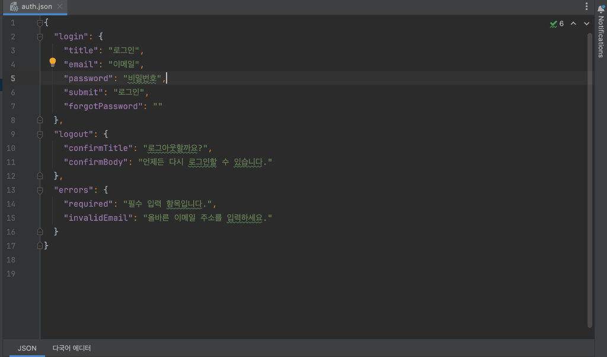
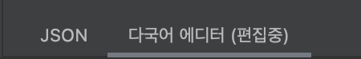
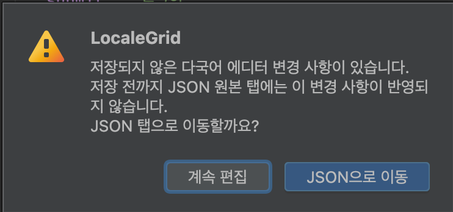
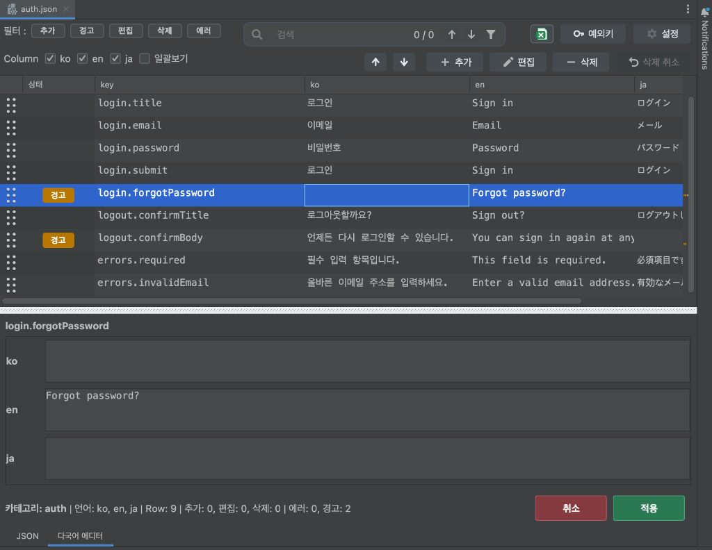
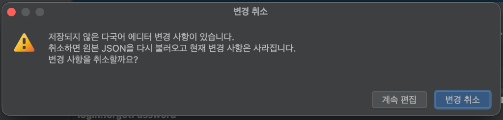
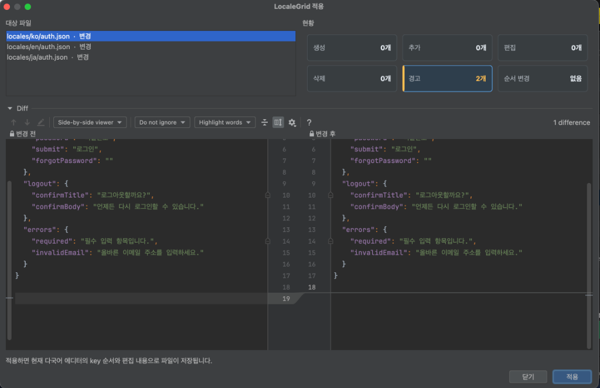
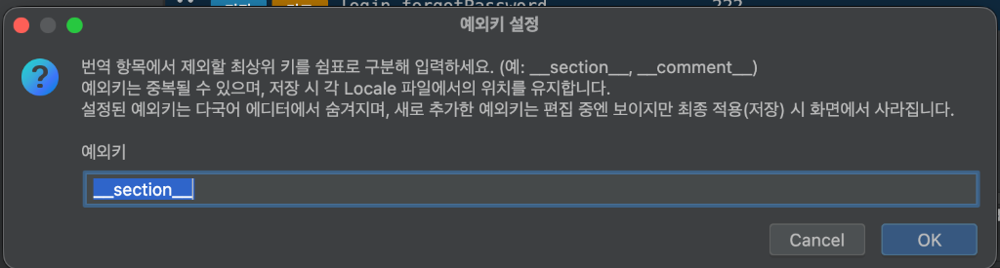
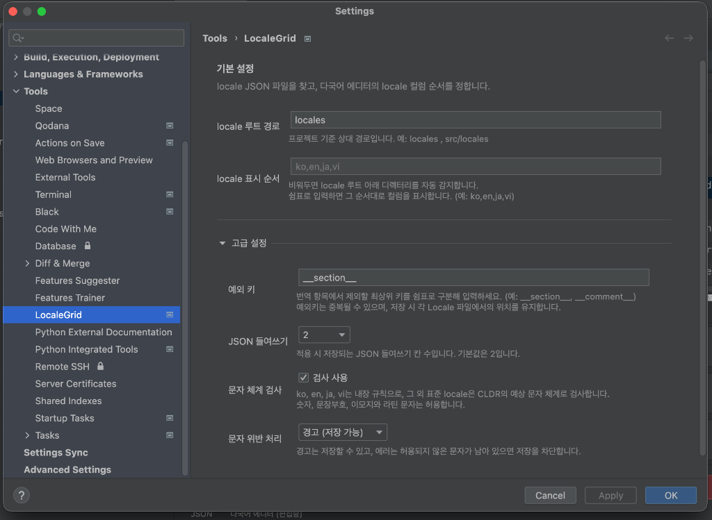

Feature Implementation & System Architecture Report
LocaleGrid 개발 기능 보고서
IntelliJ 및 PyCharm 기반 개발 환경의 다국어 리소스 JSON 파일 관리 플러그인 구현 기능 및 시스템 구조 기술 보고서
| 대상 제품 | LocaleGrid | 문서 유형 | 개발 기능 보고서 (KPI 제출용) |
|---|---|---|---|
| 작성 기준일 | 2026-09-03 | 기반 플랫폼 | IntelliJ Platform SDK / Java 17 |
| 구현 범위 | 프로덕션 Java 33개 파일 및 자동화 테스트 16개 클래스 전수 구현 및 검증 완료 | ||
| 문서 목적 | 다국어 데이터 테이블 통합 뷰, 실시간 검증 체계, 듀얼 에디터 탭 동기화, 엑셀 다운로드 및 안전한 저장 기능 명세 | ||
핵심 구현 요약
- 다국어 데이터 테이블 통합 뷰: 선택된 다국어 파일을 기준으로 동일 카테고리에 속한 모든 언어 데이터를 단일 데이터 테이블로 구성하여 한눈에 확인하고 비교·편집할 수 있습니다.
- 사전 문제 확인 및 데이터 무결성 지원: 중복 키, Dot Path 충돌, 유니코드 문자 체계(Script) 위반 등의 문제를 실시간으로 감지하여 저장 전에 사전에 확인할 수 있도록 지원합니다.
- 듀얼 에디터 탭(JSON / 다국어 에디터) 동기화: 원본 JSON 탭과 다국어 에디터 탭이 함께 제공됩니다. 다국어 데이터를 변경하기 전까지는 JSON 원본 내용이 변경되면 다국어 에디터로 자동 동기화되며, 다국어 에디터에서 편집이 시작되면(
다국어 에디터 (편집중)) 동기화가 일시 해제되어 편집 내용이 유지됩니다. 이후 변경 내용을 적용하거나 취소하기 전까지 작업 데이터가 보존됩니다. - 필터링된 내용 엑셀 다운로드: 현재 테이블에서 검색 및 상태 필터가 적용된 내용을 엑셀(
.xlsx) 파일로 즉시 다운로드할 수 있습니다. - IntelliJ 플랫폼 내장 2단계 Diff 저장: 메모리 사전 검증, 변경 통계 집계, IntelliJ
DiffManager기반 시각적 텍스트 Diff 확인 후WriteCommandAction트랜잭션으로 안전하게 저장합니다.
01프로젝트 개요 및 개발 배경
프로젝트 개발 환경에서의 다국어 리소스 관리 문제점과 LocaleGrid 개발 목적
1.1 개발 배경 및 문제 정의
프로젝트 개발에서 다국어 지원(i18n/l10n)은 필수적이나, 기존 개발 환경에서는 다음과 같은 문제점과 비효율이 존재했습니다:
언어별 다국어 파일(locales/ko/category.json, locales/en/category.json 등)이 물리적으로 분리되어 있어, 특정 키의 번역 누락이나 번역값 간의 불일치를 확인하기 위해 여러 탭을 오가며 수작업으로 비교해야 했습니다.
JSON의 계층형 트리 구조(Nested Object)를 텍스트 에디터로 직접 편집할 때 문법 오류(Syntax Error), 콤마 누락, 괄호 불일치, 그리고 중첩 키와 리프 키 간의 경로 충돌(Dot-path conflict)이 발생하기 쉬웠습니다.
번역 작업 중 한국어 리소스에 라틴 문자나 키릴 문자가 섞이거나, 일본어 리소스에 한글이 잘못 입력되는 등의 문자 체계 불일치를 개발 또는 빌드 시점에 인지하지 못해 배포 후 런타임 오류나 UI 깨짐 현상으로 이어졌습니다.
개발자가 수많은 다국어 키와 번역문을 일일이 확인하고 검수하는 과정에서 누락, 오기입, 불일치 등의 인적 오류(Human Error)가 빈번하게 발생하며, 이를 사전에 체계적으로 감지하기 어려웠습니다.
1.2 LocaleGrid의 해결 과제 및 목적
LocaleGrid는 이러한 문제를 해결하기 위해 IntelliJ Platform SDK를 기반으로 개발된 전용 다국어 그리드 에디터 플러그인입니다:
- 다국어 데이터 테이블 통합 뷰: 선택된 다국어 파일을 기준으로 동일 카테고리에 속한 모든 언어 데이터를 단일 데이터 테이블로 구성하여 한눈에 확인하고 비교·편집할 수 있습니다.
- 사전 문제 확인 및 데이터 무결성 지원: 중복 키, Dot Path 충돌, 유니코드 문자 체계(Script) 위반 등의 문제를 실시간으로 감지하여 저장 전에 사전에 확인할 수 있도록 지원합니다.
- 듀얼 에디터 탭(JSON / 다국어 에디터) 동기화: 원본 JSON 탭과 다국어 에디터 탭이 함께 제공됩니다. 다국어 데이터를 변경하기 전까지는 JSON 원본 내용이 변경되면 다국어 에디터로 자동 동기화되며, 다국어 에디터에서 편집이 시작되면(
다국어 에디터 (편집중)) 동기화가 일시 해제되어 편집 내용이 유지됩니다. 이후 변경 내용을 적용하거나 취소하기 전까지 작업 데이터가 보존됩니다. - 필터링된 내용 엑셀 다운로드: 현재 테이블에서 검색 및 상태 필터가 적용된 내용을 엑셀(
.xlsx) 파일로 다운로드할 수 있습니다.
02시스템 아키텍처 및 도메인 모델
계층화된 모듈 구조와 불변 도메인 모델 설계
2.1 계층형 시스템 아키텍처
LocaleGrid는 각 계층이 명확한 책임을 가지며 선 겹침 없이 연동되도록 수직 계층형 아키텍처로 구현되었습니다.
2.2 핵심 도메인 모델 세부 명세
| 모델 클래스 | 주요 역할 및 상태 캡슐화 | 기술적 차별성 및 무결성 보장 방식 |
|---|---|---|
TranslationTable |
동일 카테고리의 모든 다국어 데이터를 담는 최상위 컨테이너. 로케일 목록, 행 목록, 파일 매핑, 진단 목록, 순서 변경 플래그를 관리. | 카테고리 단위의 단일 인메모리 트랜잭션 모델로 동작하여 원자적 저장 및 일괄 검증의 기반을 제공. |
LocaleGridRow |
하나의 번역 키에 대응하는 행 단위 모델. originalKey, key, 행 타입(번역행 vs 예외키행), 추가/삭제 플래그를 보관. |
isModified() 메서드를 통해 키 이름 변경, 행 타입 전환, 삭제 상태, 개별 셀 값의 변경 여부를 즉시 계산하여 상태를 반환. |
LocaleValue |
특정 로케일의 번역 값 단위. value, 원본 존재 여부(present), 편집 가능 여부(editable), 수정 플래그(modified)를 관리. |
문자열 및 null만 editable=true로 설정하고, JSON 객체/배열/숫자 등은 읽기 전용으로 보호하여 원본 구조 왜곡 방지. |
Diagnostic |
검증 및 파싱 중 발생한 진단 메시지. 심각도(ERROR, WARNING), 대상 키, 대상 로케일 정보를 포함. |
오류(저장 차단)와 경고(저장 허용)를 엄격히 분리하고, 셀·행·로케일 단위로 툴팁 및 상태 마커와 연동. |
ExceptionKeyMarker |
번역 대상에서 제외할 최상위 특수 메타데이터(예: __section__)의 위치를 기억하는 앵커 객체. |
일반 번역 키와의 상대적 위치(BEFORE 또는 AFTER)를 기억해 두었다가 저장 시 원래 위치에 정확히 재삽입. |
03주요 기능 소개
실제 구현된 듀얼 에디터 탭, 무결성 검증 엔진, UI/UX 인터랙션 및 저장 메커니즘 소개
3.1 파일 탐색 및 듀얼 에디터 탭 제공
1) 이중 파일 패턴 지원:
locales/{locale}/{category}.json 패턴과 locales/{locale}/{category}_{locale}.json 접미사 패턴을 모두 자동으로 인식하며, 프로젝트 설정의 localesRoot를 기준으로 파일을 그룹화합니다.
2) 듀얼 에디터 탭 구성:
로케일 JSON 파일을 열면 기본 텍스트 에디터 대신 JSON 원본 탭과 다국어 에디터 탭이 나란히 제공됩니다.

3) 동기화 및 편집 상태 보존 정책:
다국어 에디터에서 데이터를 변경하기 전까지는 JSON 원본 탭의 소스 코드가 수정되면 다국어 에디터로 자동 동기화됩니다. 다국어 에디터에서 데이터 수정이 시작되면 아래와 같이 탭 이름이 다국어 에디터 (편집중)으로 변경되며 외부 동기화가 일시 해제됩니다. 작업 중인 내용은 [적용]하거나 [취소]하기 전까지 안전하게 유지됩니다.

4) 편집 중 탭 전환 보호 알림:
다국어 에디터에서 값을 수정한 상태(편집중)에서 원본 JSON 탭으로 전환을 시도할 경우, 저장되지 않은 변경 사항이 있음을 알리고 사용자의 확인을 거치도록 다이얼로그를 표시합니다.

3.2 순서 보존 JSON 평탄화 및 역직렬화
- 순서 보존 커스텀 파서 (
FlattenedJson.OrderedParser):LinkedHashMap을 사용하여 원본 파일의 키 선언 순서를 100% 보존하며, 동일 레벨의 중복 키(Duplicated JSON key) 발견 시 덮어쓰지 않고 즉시Severity.ERROR진단으로 등록합니다. - Dot Path 계층 트리 재구성기 (
JsonTreeWriter): 점 표기법(예:login.password)으로 관리되는 데이터를 원래의 중첩 JSON 객체 트리로 역변환합니다. 리프 노드와 하위 객체 간 충돌을 사전 차단하고 2-space 들여쓰기를 표준 적용합니다.
3.3 유니코드 스크립트 기반 다국어 문자 체계 검증
ICU4J 및 Java Character.UnicodeScript를 결합하여 다국어 파일 내에 부적합한 타 언어 문자가 혼입되는 것을 실시간 감지합니다.
| 로케일 | 허용 Unicode Script | 동작 규칙 및 예외 처리 |
|---|---|---|
ko (한국어) |
HANGUL, LATIN |
한글과 기본 라틴 문자 허용. 키릴, 아랍, 히라가나 등 타 언어 문자 유입 검출. |
en (영어) |
LATIN |
순수 라틴 문자 체계만 허용. 동아시아 문자 및 타 언어 문자 유입 검출. |
ja (일본어) |
HIRAGANA, KATAKANA, HAN, LATIN |
히라가나, 가타카나, 한자(한문) 및 라틴 문자 허용. 한글 혼입 즉시 검출. |
vi (베트남어) |
LATIN |
성조 결합 라틴 문자 허용. |
| 기타 표준 언어 | CLDR likely-subtags 기반 자동 추론 | ru(키릴), th(타이), ar(아랍) 등 표준 로케일의 예상 문자 체계를 자동 추론. |
| 공통 허용 | COMMON, INHERITED, 숫자, 이모지 |
모든 언어에서 문장부호, 결합 문자, 숫자(\p{N}), 유니코드 이모지(U+1F000~U+1FAFF)는 범용 허용. |
3.4 2-Tier 에디터 UI 및 편의 기능
다국어 에디터는 상단의 2차원 매트릭스 테이블과 하단의 로케일별 상세 편집 패널로 분할되어 있습니다.

UI 주요 기능 요소
- 상태 배지 시스템:
추가(초록),편집(파랑),경고(주황),삭제(회색),에러(빨강)의 시각적 배지를 제공하며 복수 상태 발생 시 다중 배지를 렌더링합니다. - 원클릭 다중 상태 필터: 상단 필터 버튼을 클릭하여 추가, 경고, 편집, 삭제, 에러 행만 즉시 필터링하여 조회할 수 있습니다.
- 디바운스 실시간 검색 및 하이라이팅: 500ms 디바운스를 적용하여 검색창 입력 시 일치 항목을 파란색 배경과 볼드 텍스트로 실시간 하이라이트하며, 이전/다음 내비게이션 및 결과 필터링을 지원합니다.
- 드래그 앤 드롭 행 순서 재정렬: 좌측 핸들 열(0번 컬럼)을 마우스로 드래그하거나 툴바의 이동 버튼(
▲,▼)을 사용하여 키 순서를 재배치할 수 있습니다. - 스크롤 미니맵 바 (
StatusScrollMap): 수직 스크롤바 트랙 위에 에러(빨강), 경고(주황), 수정(파랑), 추가(초록) 위치를 도트 마커로 표시하여 문제가 있는 행으로 즉시 이동할 수 있습니다. - 하단 상세 편집 패널 (Detail Panel): 선택된 키의 언어별 번역값을 개별 입력 필드에서 편리하게 편집할 수 있으며, 인라인 진단 메시지를 실시간으로 제공합니다.
- 특수문자 및 개행 보존 (
LocaleTextEscaper):\n,\r,\t문자를 셀 내에서 시각적인 이스케이프 문자열로 안전하게 변환하여 테이블 레이아웃을 유지합니다.
변경 취소 안전 다이얼로그:
에디터 하단의 [취소] 버튼을 클릭할 때 저장되지 않은 변경 사항이 존재하면, 원본 상태로 복구하기 전 사용자 확인을 요청하여 작업 데이터의 우발적 유실을 방지합니다.

3.5 안전한 2단계 적용 및 Diff 프리뷰
단 한 번의 잘못된 클릭으로 원본 JSON 리소스가 손상되는 것을 방지하기 위해 2단계 검증 및 프리뷰 프로세스를 거칩니다.

3.6 필터링된 내용 엑셀 다운로드 (ExcelExportWriter)
현재 테이블에서 검색 및 상태 필터가 적용된 내용을 엑셀(.xlsx) 파일로 다운로드할 수 있습니다.
외부 무거운 라이브러리(Apache POI 등) 없이 순수 Java의 ZipOutputStream과 OpenXML 표준 규격을 직접 구현하여 가볍고 빠르게 동작합니다.
- 전문 서식 자동 적용: 첫 행 헤더 틀 고정(
frozen pane), 전 컬럼 자동 필터(autoFilter), 줄바꿈 서식(wrapText), 컬럼 너비 자동 계산 적용. - 원클릭 완료 액션: 다운로드 완료 시 '파일 열기', '폴더 열기', '닫기' 다이얼로그를 제공하여 즉각적인 확인을 지원.
3.7 비파괴적 메타데이터 보존 및 프로젝트 설정
1) 예외키 설정 다이얼로그:
에디터 상단의 예외키 버튼을 통해 번역 항목에서 제외할 최상위 키(예: __section__, __comment__)를 설정할 수 있습니다. 예외키는 다국어 에디터의 일반 번역 목록에서 숨겨지며, 저장 시 각 언어별 파일에서의 원래 위치가 그대로 유지됩니다.

2) IDE 프로젝트 환경 설정:
Settings > Tools > LocaleGrid 메뉴에서 프로젝트 전역 옵션을 설정할 수 있습니다.
- 기본 설정:
locale 루트 경로(기본locales),locale 표시 순서(예:ko,en,ja,vi). - 고급 설정:
예외 키,JSON 들여쓰기(2/4칸),문자 체계 검사사용 여부 및문자 위반 처리(경고 vs 에러) 정책을 유연하게 조정할 수 있습니다. - 에디터에 미저장 변경 사항이 남아 있을 경우 구조적 설정 변경을 사전에 제한하여 데이터 무결성을 보호합니다.

04기술적 차별점 및 주요 성과
기존 수작업 관리 방식 대비 개선 성과 비교
| 비교 항목 | 기존 수작업 / 텍스트 편집 | LocaleGrid 도입 후 | 주요 개선 성과 |
|---|---|---|---|
| 다국어 파일 관리 | 언어별 파일 탭을 각각 열고 키를 수동 검색하여 비교 | 선택된 파일 기준 단일 데이터 테이블로 통합 비교·편집 | 작업 시간 단축 |
| JSON 구문 무결성 | 콤마, 따옴표 오탈자, 중괄호 불일치 발생 위험 | 트리 생성기를 통한 자동 인덴테이션 및 구문 오류 사전 차단 | 구문 오류 사전 방지 |
| 문자 체계 적합성 | 타 언어 문자 혼입을 개발 시점에 인지하기 어려움 | ICU4J/CLDR 기반 유니코드 스크립트 실시간 감지 및 안내 | 오기입 사전 확인 100% |
| 저장 안정성 | 저장 시 즉시 덮어쓰기되어 실수 복구 어려움 | 변경 통계 집계 + IntelliJ 내장 Diff 프리뷰 확인 후 저장 | 실수로 인한 손상 방지 |
| 엑셀 내보내기 | 수작업 복사 또는 별도 변환 툴 필요 | 현재 필터링된 내용 기반 원클릭 .xlsx 다운로드 | 데이터 추출 간소화 |
| UI 반응성 | 수천 줄 편집 시 에디터 렌더링 지연 발생 가능 | SwingDebouncer(검색 500ms, 편집 300ms) 적용 | 부드러운 반응성 유지 |
05결론 및 향후 확장성
프로젝트 개발의 기술적 의의 및 미래 발전 방향
LocaleGrid는 다국어 리소스 관리 과정에서 반복적으로 발생하던 다중 파일 대조의 번거로움, 계층 구조 훼손 위험, 타 언어 문자 혼입 문제를 해결하기 위해 구현된 개발 도구입니다.
- 선택된 다국어 파일을 기준으로 모든 언어를 하나의 테이블에서 한눈에 조망할 수 있는 직관적인 작업 환경을 제공합니다.
- 유니코드 스크립트 검증과 계층형 트리 재구성기를 통해 데이터의 정확성과 구조적 안정성을 보장합니다.
- 시각적 상태 배지, 실시간 검색 하이라이팅, 스크롤 미니맵, 저장 전 Diff 프리뷰를 통해 개발자의 인적 오류(Human Error)를 효과적으로 방지합니다.
본 플러그인을 통해 다국어 리소스 관리 작업의 편의성과 품질을 한층 높일 수 있으며, 향후 다양한 리소스 형식이나 맞춤형 검증 규칙으로의 확장도 유연하게 지원할 수 있습니다.